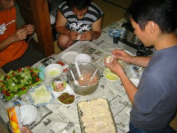
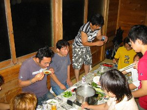
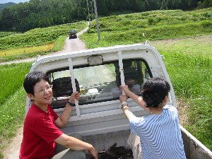
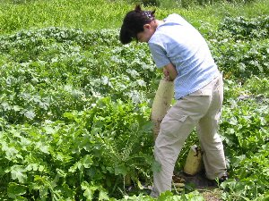

茶臼山高原天体観測 | ２００３年８月２−３日 |
|---|---|
| この夏火星大接近！地球と火星は２年２ヶ月ごとに接近はしているのですが、火星の公転軸は地球とずれている為、接近するたびに距離が違います。 この夏の大接近は２１世紀最大級で、同じような接近は２８４年後とか。 これを逃すべきではなく、我々も星の降る里、長野県と愛知県の県境にそびえる茶臼山高原（長野県）へ天体観測に赴きました。 まずは現地到着後、茶臼山（愛知県の最高峰１４１５ｍ）へ簡単ハイキング。３０分もかからず山頂（手前）展望台へ。 展望台は周り一体が見渡せ、風がひじょーに気持ちが良い場所です。眼下に高原が広がっています。天気予報は曇りでしたが、なんかいい感じに雲が切れてます。これは天体観測も期待大か！ 今回お泊まりは、茶臼山高原キャンプ場の貸別荘。綺麗とは呼べないが、畳の部屋が二つ、台所と便所が付いてます。コンロも有ります。たすまんずとしては上等です。問題なし！ そして、本日のメインメニューは水餃子（焼きも有り）です。みんなで材料を切り、餃子の皮で包みました。かなりオリジナリティーあふれる形になったのですが、不思議と食べるときは、変な形を食べてないような？？ ここで、告白しなければなりません！ 私（べっしー）とじゅんじゅんで、餃子の中に枝豆を一粒づつ計６個作りました。当たりってやつです！ しかーし、これを食べたって人を聞きません。誰？気が付かないのは？ みんな自分じゃないよって、思ってませんか？ 確実に６個は有るんですよ。 | |
 茶臼山山頂一歩手前展望台より でも、ここの方が景色がいいです〜 |  １３０個余りの餃子を作りました メチャウマです |
| なんにせよ、水餃子美味しかった！もう、いくつでも食べられるね。焼きも最高！天体観測忘れながら食べてビール飲んでました。(^^ゞ ふと気が付くとRyuuさんがいない。もう天体観測に行ったか？私も天体観測場所と決めていた駐車場へと急ぐ。 現場では既にRyuuさんがご自慢の望遠鏡をセッティングしていた。火星はまだ水平線近辺にあり、まだ見づらい。 このRyuuさんご自慢の望遠鏡がすごい！シュミットカセグレンで赤道義装備、ヒーター付き。残念なのはバッテリーを忘れたらしく、自動追尾不可。 私も高校時代は天文部に属していた端くれ、天体には興味が有り。この夜、Ryuuさんが見せてくれたM13なんていう球状星団は感動モンです。 なんか、また天体観測に興味が出てきましたよ。写真撮りたいね。星雲とかさ。 天体観測中、横で寝ている人もいましたが・・・・そんだけ気持ちよかった事です。 | |
|  夜の宴会 天体観測を控えているRyuuさんは控え気味です |  駐車場で天体観測 おやおや、寝入っている人がいますね |
| 翌日は曇り、朝食はホットケーキとパン、ソーセージ。ホットケーキにバターと蜂蜜を塗りたくって食べる。甘くて美味しい！今回はRyuuさんが焼いてくれました。う〜ん、今回大活躍ですね！ 朝食後、部屋を引き払い、昨日ゾウさんとじゅんじゅんが来るときに迷って発見した、トウモロコシ販売所を訪ねる。そこは『とんび農園』と言って農家の人たちの直売所だった。トウモロコシの他に大根、ゆうがお等色々販売している。 お目当ての生のまま食べられるトウモロコシを購入！これが生で食べても甘いんだ！果物って感じです。おいし〜いぃ！ ここでじゅんじゅんが「大根をこいでみたい」お店の人に言い、人の良いおじさんが「そんなら今から行くか」とじゅんじゅん、ぞうさん、私を軽トラックの荷台に乗せ近くの畑へ。そこで掘らせてくれました。（掘るって言うか抜くだよね） デカイ大根で、すんごい重い。こいだだけでなく、ついでにくれました。いやーもう、うれしいな♪(^○^) そこのおじさん達と記念写真を撮って、キッカー率いるクライミング班とハイキング班、直帰班と別れ、我々ハイキング班は元の茶臼山へ。 | |
|  軽トラの荷台に載せてもらい出陣！ |  ズボッって音が聞こえそうです |
| 昨日茶臼山へは登っているので、本日は横の萩太郎山へ。ところが萩太郎山って茶臼山高原スキー場だった。リフトでも登れる、駐車場から山頂辺りも見える。 なんかね〜ってな感じでやる気を失っていた我々の横を、スノボーに大きいタイヤを付けたようなもので青々したゲレンデを下って行く人がいるではありませんか！ 『なにあれ！レンタルしてるの？やってみたい！』って事で、早速そのマウンテンボードなるものをレンタルし、緩やかな場所で練習！ マウンテンボードは写真を見てもらえば分かるが、板に大きめなタイヤが４つ付いていて、スノボーと同じように足を入れる帯のようなものが付いている。 これで斜面を位置エネルギーで下るわけですが、ブレーキはないのでスピードが出る。こけると雪ではないので痛そう・・・・ みんな初めは怖々とやり始めます。（腰が落ちてるのね）やってみると面白い。路面の起伏をそれほど感じず、ダーと下っていく。止まり方が分からないので一番下まで行く。 本来はリフトに乗って山頂から下ってくるのですが、そこまで技術も無いので歩いて斜面を登る。下るのは楽だが登るのに汗をかく。 ひとしきり楽しんだ後は、レストランで昼食を取り、帰りがけの『湯〜らんどパル』で温泉に浸かり（露天風呂が改装中で使えず残念）帰宅しました。 | |
 これがマウンテンボード 緩い傾斜をそれでも速く進みます |  誰かは言いますまい 本人必死です |